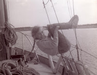
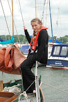
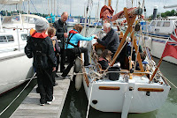
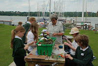
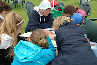
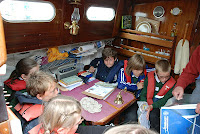
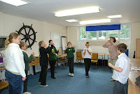
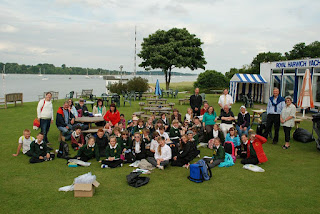

 |
| Once upon a time .... |
{kind=link}
 |
| on Peter Duck's foredeck |
{kind=link}
It began back in March when I was
invited to give an after supper talk at the Royal Norfolk and Suffolk
Yacht Club in Lowestoft. An enterprising teacher, who is a member of
the club, had been reading The Salt-Stained Book to some of
the children in years 5 & 6 of a local primary school. She
persuaded the club to invite the children in for the day –
thirty-six in the morning and the same in the afternoon. We gathered
round an enormous mahogany table in the club's conference room, all
of us in our best behaviour. In the corner of the room I could see
the box into which members used to drop their white or black balls
when deciding on the election of a new member. The children learned
to tie knots in the club training room and went out onto the pontoons
and into the winter storage area to look at boats of many different
shapes and sizes. These are children from a former fishing village,
perched on the Suffolk coast, but the North Sea fish are long gone
and many of their families are third generation unemployed. One of
the children asked the teacher why the masts of the boats on the
water kept moving. Somehow this was the question that made us realise
how completely many of them had lost their connection with the sea.
We resolved that Year 6 at least, the children about to move on to
secondary school, should be given the opportunity to feel this watery
movement for themselves.
 |
| Welcome to the Goblin |
{kind=link}
To take thirty-six ten and eleven year
olds for a day's sailing proved too difficult to organise so we
compromised. Nancy Blackett (Arthur Ransome's 'Goblin') was
keen to help and so was Peter Duck. They were joined by a
small friendly cruising yacht named Kiboko (hippo). The Royal
Harwich Yacht Club (aka
'Royal Orwell & Ancient') offered the use of their facilities
and the Year 6 leavers swiftly added We Didn't Mean to Go to Sea
to their class reading. We met at Alton Water near Ipswich –
where the hero of The Salt-Stained Book has his first
experience of sailing – and moved on to Pin Mill where the
adventures commence in We Didn't Mean to Go To Sea. As
the children and their teachers walked through the woods beside the
Orwell, up-river to the yacht club, they collected scattered sea-bird
feathers and unripe berries to weave into the dream-catchers that
they would be making later.
 |
| Making dream-catchers |
{kind=link}
 |
| Chartwork |
{kind=link}
Lunch
on the grass, a welcome from the Commodore and it was activity time.
Six groups with six children in each: learning to read a chart,
making the dream-catchers and working with Ali Roberts of the
Cambridge Arts Theatre. (They'd first met Ali when two anonymous
benefactors from the Nancy Blackett Trust had paid for them all to
travel to Cambridge to see the stage production of Swallows
and Amazons). The rest of the
afternoon was to be spent on each of the three yachts in turn. Kiboko
offered an introduction to the
practicalities of small boat cruising, Nancy Blackett has
star-status as Ransome's “best little ship” and all the beautiful
authenticity of the 'Goblin' in which his Swallows crossed the North
Sea – what was Peter Duck
going to contribute?
 |
| Inside the Hippo |
{kind=link}
I put paper,
pencils, crayons in the cabin and showed each group the bunk where I
slept as a child and the fore-hatch which my brothers and I liked to
climb through. Then I told them they were free to do exactly as they
liked. Some wanted information – how did the depth sounder work or
the radar? Could they hold the tiller or hoist a sail? One group
wanted to make tea in the galley, another to put up Peter Duck's
flags. They drew pictures, they scrambled, they sat and chatted on
the cabin-top, gazed into the distance from the bows or hung over the
side spotting jelly fish. Most of all they played. One group decided
they were the Sparrows (I love the idea of crossing the Johnny Depp
pirate with Ransome's John Walker) and began plotting dastardly
attacks on the unsuspecting Hippos. Others screeched with delight
when I turned on PD's engine “Help! she's kidnapping us!”
Two children told me about the progress they'd made in their own
stories since we'd met in March. Their main achievement had been
throwing their fictional parents overboard and sailing on alone.
 |
| Drama with Ali |
{kind=link}
Story-telling is a
form of playing – playing with the hard facts of existence. I've
just finished reading One Summer's Grace by Libby Purves. It's
a startlingly honest account of a 1988 family voyage round Britain
with children aged 3 and 5. A tremendous achievement, showing brains,
skill, courage, imagination – and how I sympathised with the
bored, sick, 'brattish' children as well as the tense, self-doubting,
snappy parents. Our family voyages were never as daring or as
prolonged but I know from my own memories that Purves's conclusion is
spot-on. “What we discovered during those months of close
confinement was that you can hold off a child's boredom or unease for
a half an hour with a new toy, or half a day with an outing; but that
a new story will keep them going for weeks on end. Nothing
kept the children happier or more satisfied than the exotic games and
fantasies they developed out of the tales we found them: of the cod
who flew down the chimney, St Magnus the Good Viking, the Muckle
Meister Stoor Worm or Bonnie Prince Charlie.” I hope our young
visitors felt the same.
 |
| The End |
{kind=link}